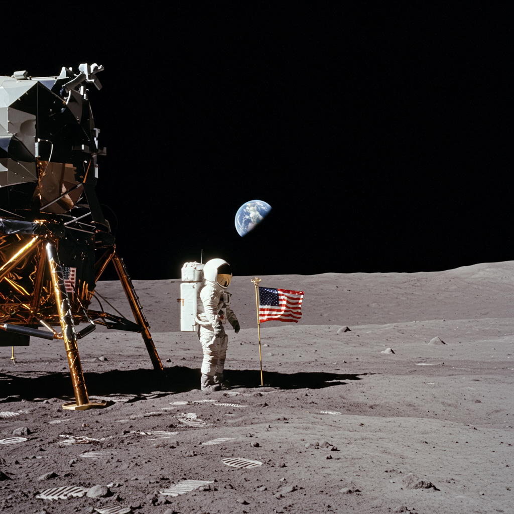

Apolo 11
Agencia: NASA
Fecha de lanzamiento: 16 de julio de 1969
Duración: 8 días, 3 horas, 18 minutos
Tipo de misión: Tripulada (alunizaje)
Objetivo: Lograr el primer alunizaje tripulado y regreso seguro a la Tierra.
Carga científica: Sismógrafos, retrorreflectores láser, experimentos solares, cámaras fotográficas, muestras lunares (más de 21 kg).
— Neil Armstrong, 20 de julio de 1969
Impacto histórico
Apolo 11 fue la primera misión tripulada en aterrizar en la Luna. El comandante Neil Armstrong y el piloto Edwin "Buzz" Aldrin descendieron en el módulo lunar *Eagle*, mientras Michael Collins orbitaba en el módulo de comando. Este hito tecnológico y humano marcó la culminación de la carrera espacial, demostrando la capacidad de exploración interplanetaria. El momento fue seguido en vivo por más de 500 millones de personas en todo el mundo.
